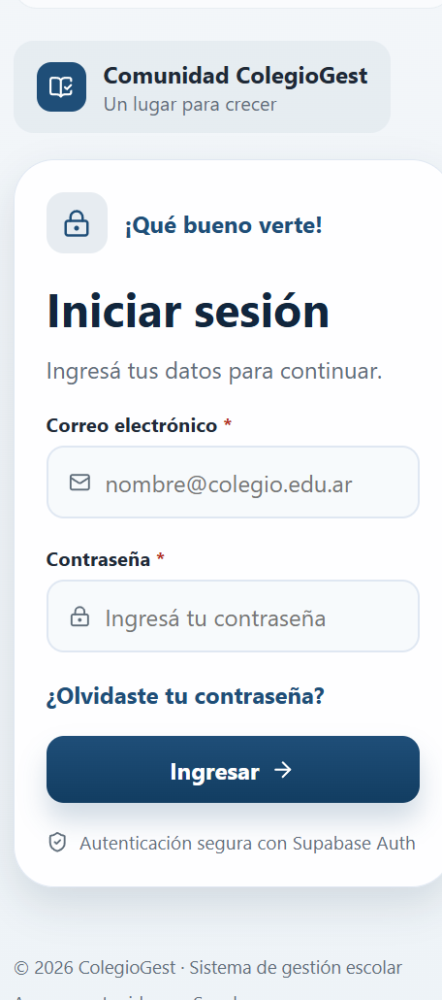
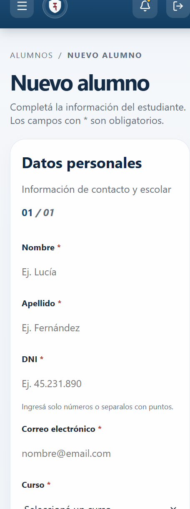
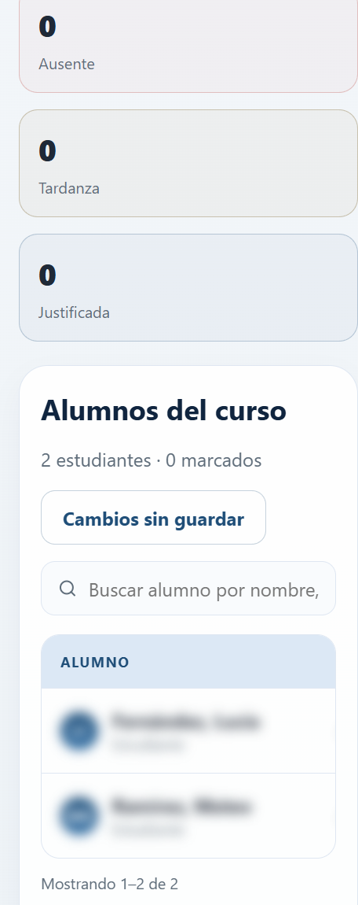
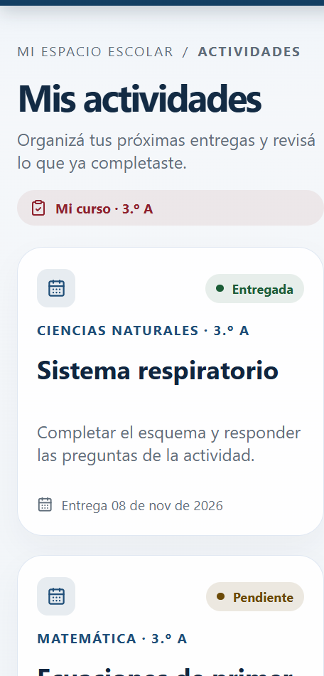
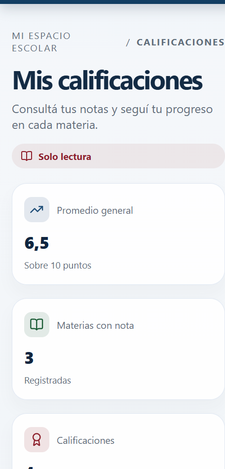

Administración
Organiza personas, cursos, materias y permisos de acceso.
MANUAL DE USUARIO
Instrucciones para administrar la información escolar, registrar el trabajo docente y consultar el espacio del alumno.
ColegioGest reúne en un mismo lugar los cursos, materias, personas, inscripciones, calificaciones, asistencias, actividades y avisos del colegio.
Organiza personas, cursos, materias y permisos de acceso.
Consulta cursos y registra asistencia, notas, actividades y avisos.
Consulta su información académica y el contenido de su curso.
Ingresá con el correo y la contraseña que te entregó la administración. No compartas tu contraseña ni uses la cuenta de otra persona.
Abrí el enlace oficial del sistema que te proporcionó el colegio.
Escribí tu correo electrónico y tu contraseña.
Seleccioná Ingresar. El sistema abrirá el panel correspondiente a tu rol.
Para salir, usá el botón de cierre de sesión en la parte superior de la pantalla.

| Rol | Opciones principales |
|---|---|
| Administrador | Alumnos, Profesores, Usuarios y roles, Cursos y materias, Inscripciones, Calificaciones, Actividades y Avisos. |
| Profesor | Mis cursos, Asistencia, Calificaciones, Actividades y Avisos. |
| Alumno | Mis datos y materias, Mis calificaciones, Mis asistencias, Mis actividades y Avisos. |
Las altas y modificaciones de personas se realizan desde las secciones de Alumnos y Profesores. Los datos obligatorios aparecen marcados con un asterisco.
En Profesores → Nuevo profesor, completá nombre, apellido, DNI, correo y contraseña inicial. La contraseña es obligatoria. Para darlo de baja, primero reasigná o quitá las materias vigentes que tenga a cargo.

En Usuarios y roles podés crear otro administrador desde Nuevo administrador indicando nombre, apellido, DNI, correo y contraseña inicial; también podés buscar cuentas, cambiar el rol y activar o desactivar usuarios. Confirmá el cambio antes de aceptarlo. No podés cambiar tu propio estado o rol; las cuentas docentes con asignaciones vigentes no se pueden desactivar.
Para otorgar un rol a una persona, primero debe existir su cuenta/perfil. Revisá el rol y los permisos antes de guardar.

Las opciones docentes se habilitan según las materias y cursos asignados por la administración.
En Mis cursos consultás las materias asignadas y los cursos donde trabajás. Si no aparece una materia, contactá a la administración para revisar la asignación.


En Calificaciones → Nueva calificación, elegí la materia/asignación y alumno, completá instancia, nota del 1 al 10 y fecha. Guardá el registro.
Modificá la nota desde el campo editable y seleccioná Guardar cambios. Para eliminar, usá la papelera y confirmá. La base valida la asignación y rechaza fechas futuras.
Para corregir una actividad propia, usá el lápiz; para quitarla, la papelera y confirmá. La pantalla docente también muestra el estado/cantidad de entregas.

Tu espacio es de solo consulta para datos académicos. Las notas y asistencias no se pueden editar desde una cuenta de alumno.
En Mis datos y materias revisás tu perfil, curso y materias asociadas. Si detectás un error en tus datos, pedí a la administración que lo corrija.
En Mis calificaciones consultás el promedio, las materias con notas y el detalle organizado por materia. Podés buscar por materia o instancia y filtrar por materia y fecha.
En Mis asistencias consultás el historial por materia y fecha, junto con el conteo de presentes, ausentes, tardanzas y justificadas. Si hay un dato incorrecto, comunicate con el docente o la administración.
En Avisos aparecen las comunicaciones institucionales y las dirigidas a tu curso, ordenadas de la más reciente a la más antigua. Usá la búsqueda y los filtros para encontrarlas.

En Mis actividades revisá la consigna, la materia y la fecha de entrega. El estado indica si la actividad está pendiente o ya fue marcada como entregada.
Los avisos institucionales y los dirigidos a tu curso aparecen en Avisos, ordenados del más reciente al más antiguo. Usá la búsqueda, categoría, destinatario o fecha para encontrarlos.
| Situación | Qué hacer |
|---|---|
| No puedo iniciar sesión | Revisá correo y contraseña. Si la cuenta está inactiva o no tiene perfil, contactá a la administración. |
| No llega el correo de recuperación | Revisá correo no deseado y la dirección ingresada. Si no llega, pedí ayuda a la administración del colegio. |
| No aparece un curso o materia | El profesor debe tener una asignación vigente y el alumno una inscripción activa. Consultá a la administración. |
| El sistema no permite guardar | Revisá los campos obligatorios, el formato, la fecha y que la información corresponda al curso/materia asignados. |
| Veo “Sin permiso” | La función no corresponde a tu rol. No intentes acceder con la cuenta de otra persona. |
No compartas contraseña ni dejes una sesión abierta en un equipo compartido. Cerrá sesión al terminar.
Consultá solo la información necesaria para tu tarea. No difundas capturas con DNI, correo, notas o asistencias.
Las bajas lógicas y eliminaciones requieren confirmación. Revisá el nombre y el curso antes de aceptar.
Indicá la pantalla, el paso realizado y el mensaje recibido. No envíes contraseñas ni tokens.
La versión actual incluye administración académica, funciones docentes y consultas del alumnado. Los reportes PDF/Excel, notificaciones por correo, boletín automático y acceso de tutores están previstos para una versión futura. La recuperación por correo depende de la configuración del servicio de correo de Supabase.
Las capturas de este manual son vistas móviles de demostración. Se ocultaron identificadores de las cuentas. La interfaz puede variar levemente según el tamaño de pantalla y los datos disponibles.